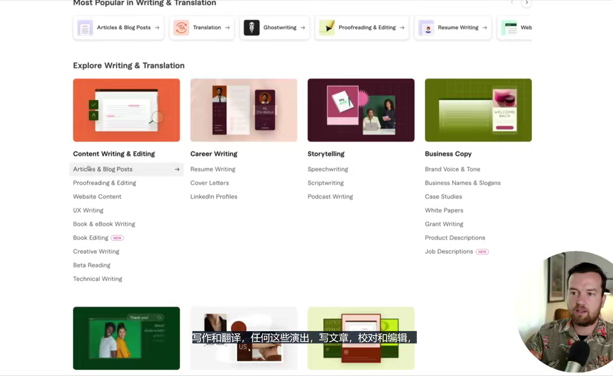
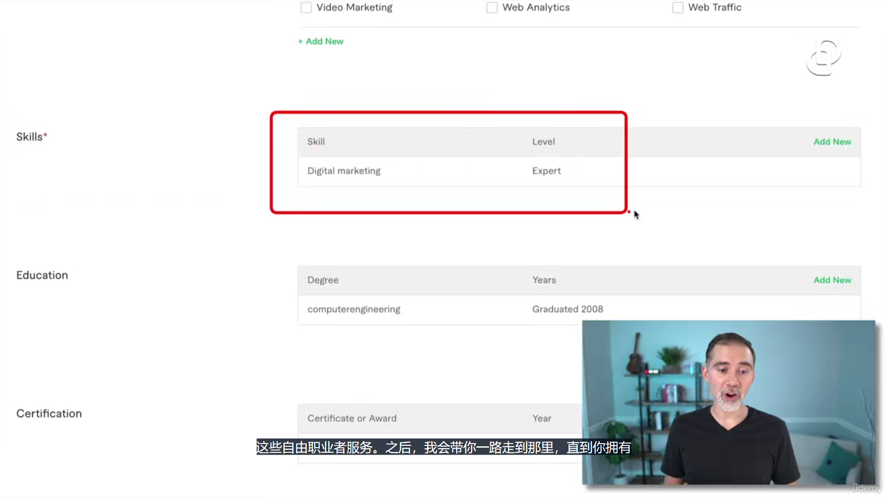
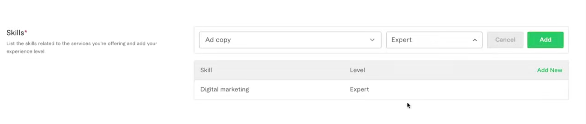
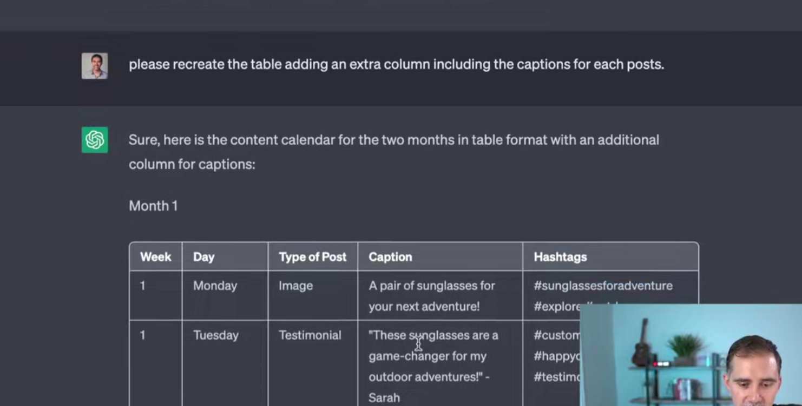
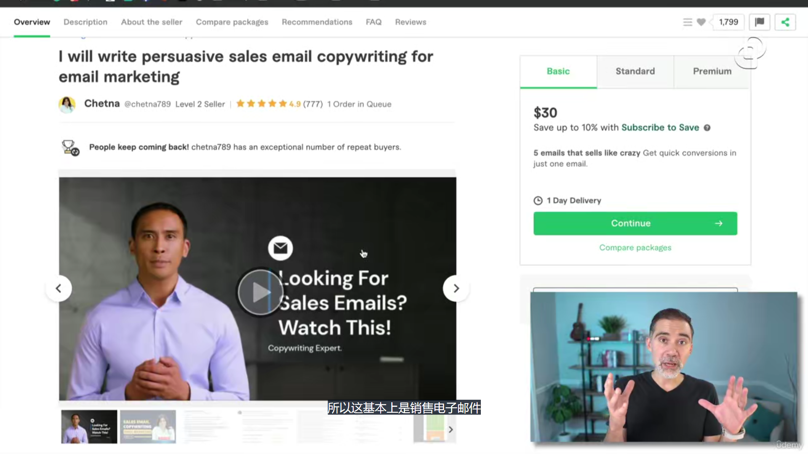
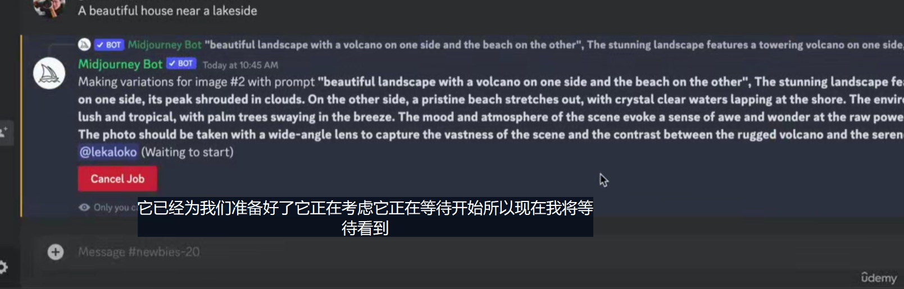

1 - Introduction to the ChatGPT Midjourney Course
01 - Welcome to 23 Ways of Earning Money with AI
有的人很懒, 不想学如何用ai, 而是选择雇佣会ai的人

02 - Get Started with ChatGPT
question:
在中文互联网中的程序员群体中, 最受关注的编程技术领域是哪些
answer:
在中文互联网的程序员群体中，一些技术领域比其他领域更受关注，这往往与全球技术趋势、国内市场需求和政策导向有关。截至我最后更新的信息（2021年），以下是几个备受关注的编程技术领域：
1. **人工智能与机器学习**：随着技术的进步，人工智能（AI）和机器学习（ML）在各个行业中的应用越来越广泛，包括图像识别、自然语言处理、推荐系统等。
2. **大数据**：大数据分析、处理和可视化技术，以及相关的框架如Hadoop、Spark等。
3. **云计算**：云服务提供商的服务和解决方案，如阿里云、腾讯云、华为云等，以及云原生技术，如Kubernetes、Docker等。
4. **前端开发**：前端技术的发展很快，包括React、Vue、Angular等现代JavaScript框架和工具链。
5. **移动开发**：移动设备仍然是一个巨大的市场，iOS和Android开发，以及跨平台解决方案如Flutter、React Native等。
6. **区块链**：加密货币、智能合约、去中心化应用（DApps）等区块链技术。
7. **物联网（IoT）**：随着5G技术的推广，物联网的应用也越来越多，涉及到嵌入式系统开发、传感器数据处理等。
8. **网络安全**：随着网络攻击的增加，网络安全变得越来越重要，包括应用安全、数据加密、入侵检测等。
9. **游戏开发**：游戏行业的快速增长也带动了对游戏开发技术的关注，包括游戏引擎如Unity、Unreal Engine的使用。
10. **DevOps与自动化测试**：提高软件开发效率和质量的方法，如持续集成（CI）、持续部署（CD）和自动化测试工具。
由于技术领域不断进步，具体的热门技术点可能会有所变化。例如，量子计算、边缘计算等新兴技术可能会随着技术成熟和应用场景的增多而受到更多关注。此外，受到政策推动的技术领域，如国家支持的新基建项目中涉及到的技术，也会受到程序员群体的高度关注。
请写出一份关于设计领域的书籍的大纲 Write an outline for a book on the basics of graphic design.
你正在教育小学生, 请为平面设计的书籍写一份大纲, 并使用简单的例子让他更通俗易懂
You are teaching elementary school students about graphic design.
Write an outline for a short book on the basics of graphic design.Make it down to earth with
simple examples for kids.
Title: "Graphic Design Adventure: Creating Magic with Colors and Shapes!"
**Introduction: The Magical World of Graphic Design**
- What is Graphic Design?
- Why Graphic Design is Like a Superpower
**Chapter 1: The Toolbox of a Graphic Designer**
- Pencils and Paper: Sketching Your Ideas
- Computers and Software: The Digital Canvas
- Colors and Brushes: Painting Your World
**Chapter 2: The Language of Colors**
- What Colors Mean: Feeling Blue or Seeing Red?
- Mixing Colors: Discovering New Shades
- Colorful Emotions: How Colors Affect Our Feelings
**Chapter 3: The Power of Shapes**
- Circle, Square, Triangle: The Building Blocks
- Combining Shapes: Creating New Forms
- Shapes in Nature: Finding Design Everywhere
**Chapter 4: The Alphabet of Design: Typography**
- Letters as Art: Choosing the Right Font
- Making Words Pop: Size and Color
- Fun with Fonts: Creating a Mood with Typography
**Chapter 5: Layout Land: Arranging Your Art**
- The Map of Design: Where to Put Things?
- Balancing Act: Keeping Your Design Steady
- Magic Tricks: Making Your Design Flow
**Chapter 6: Bringing Pictures to Life: Illustration**
- Drawing from Imagination: Your Stories on Paper
- Cartoon Fun: Designing Characters
- From Doodles to Digital: Your Art in the Computer
**Chapter 7: The Secret of Logos**
- What is a Logo?
- Famous Logos and Their Stories
- Design Your Own Logo: Representing Your Superhero Self
**Chapter 8: Posters and Flyers: Designing to Share Messages**
- What Makes a Poster Great?
- Simple Messages: Less is More
- Your First Poster: Announcing Your Lemonade Stand
**Chapter 9: Designing for the Digital World**
- Websites and Apps: Making Cool Interfaces
- Buttons and Icons: Tiny Art with a Big Job
- Your Digital Art Gallery: Sharing with the World
**Chapter 10: The Adventure Continues: Becoming a Young Designer**
- Practice Makes Perfect: Daily Design Challenges
- Learning from Others: Finding Inspiration
- Your Design Portfolio: Showing Off Your Creations
**Conclusion: The Future of Design is Yours!**
- Keep Creating: Your Journey is Just Beginning
- Dream Big: You Can Design Anything
- The World Needs Your Art: Be a Design Superhero!
**Glossary: Design Words to Know**
**Resources: Books, Websites, and Tools for Young Designers**
This book would be filled with interactive elements, such as spaces for drawing, sticker activities to learn about layout and balance, and simple computer or tablet exercises for digital design. It would also include profiles of kid-friendly designers and examples of design in everyday life to inspire young readers.
请编写这本书的第一个章节
Write the first chapter of this book.
2 - ChatGPT Revenue Freelance services
03 - ChatGPT Freelance Introduction
04 - ChatGPT Freelancing Best platforms for freelancers
05 - Creating your Fiverr freelancer account

3 - ChatGPT Copywriting
06 - Copywriting opportunities in Fiverr ChatGPT
07 - Case Study Writing a sales page as a freelancer with ChatGPT
q:
列出所有现有的文案框架的列表
a:
文案框架是营销和广告领域用来构建有效沟通信息的结构。它们帮助文案撰写者组织其内容，以便清晰、有逻辑地传达信息，并引导读者采取行动。截至2021年，以下是一些常见的文案框架：
1. **AIDA**（Attention, Interest, Desire, Action）：吸引注意力、建立兴趣、激发欲望、促使行动。
2. **PAS**（Problem, Agitation, Solution）：提出问题、加剧问题、提供解决方案。
3. **FAB**（Features, Advantages, Benefits）：特点、优势、好处。
4. **4 Ps**（Promise, Picture, Proof, Push）：承诺、描绘、证明、推动。
5. **4 Cs**（Clear, Concise, Compelling, Credible）：清晰、简洁、引人注目、可信。
6. **QUEST**（Qualify, Understand, Educate, Stimulate, Transition）：资格、理解、教育、刺激、过渡。
7. **ACC**（Awareness, Comprehension, Conviction）：意识、理解、信念。
8. **BAB**（Before, After, Bridge）：之前、之后、桥梁（从现状到理想状况的转变）。
9. **OATH**（Oblivious, Apathetic, Thinking, Hurting）：不知情、冷漠、思考、痛苦（根据顾客的意识程度）。
10. **Star-Chain-Hook**：情景、连锁、钩子（故事串联）。
11. **The 5 Ws**（Who, What, When, Where, Why）：谁、什么、何时、何地、为什么。
12. **The 6+1 Model**（Who, What, Where, When, Why, How, + Call to Action）：谁、什么、何时、何地、为什么、怎样、+ 行动号召。
13. **Value Proposition Canvas**：价值主张画布，帮助定义产品或服务对客户的价值。
14. **The StoryBrand Framework**（SB7）：故事品牌框架，通过七个步骤清晰传达品牌故事。
15. **The Hero’s Journey**：英雄之旅，用叙事的方式展示产品或服务如何帮助顾客克服挑战。
这些框架可以单独使用，也可以结合起来使用，以适应不同的营销和广告目的。在实际应用中，文案撰写者可能会根据特定情况对这些框架进行调整或创新。随着市场的变化和消费者行为的演进，新的文案框架可能会被开发出来。因此，这个列表并不是固定不变的，而是随着时间的推移和行业实践的发展而不断演化的。
你可以将这些文案编写框架发给客户, 让他选择想要的类型
template:
你是一名文案专家。写一个完整的销售页面来销售[产品/服务]。写到最多[n]个词。使用文案框架[哪个框架]写作。询问后续问题。直到你有了所有需要的信息，你才能写出完美的销售页面。
q:
你是一名文案专家。写一个完整的销售页面来销售我的壁纸。写到最多50个词。使用文案框架4 Cs写作。询问后续问题。直到你有了所有需要的信息，你才能写出完美的销售页面。
a:
为了创建一个精准的销售页面，我需要更多的信息来了解你的壁纸产品。请提供以下信息：
1. **壁纸的特点**：它是数字壁纸还是实体壁纸？有何独特设计或功能？
2. **目标客户**：你的理想客户是谁？他们的需求和偏好是什么？
3. **竞争优势**：你的壁纸与市场上其他壁纸相比有何优势？
4. **期望的行动**：你希望顾客在浏览销售页面后采取什么行动？（例如购买、注册下载等）
请提供这些详细信息，以便我能够为你撰写一个有效的、符合4 Cs文案框架的销售页面。
q:
1. 它是数字壁纸
2. 目标客户是希望在网上获取免费数字壁纸的人
3. 竞争优势是免费, 画面精美, 高分辨率
4. 期望用户通过我们文案的指引, 到指定程序入口下载壁纸, 并进行分享
a:
感谢您提供的详细信息。以下是一个根据4 Cs文案框架撰写的销售页面草稿：
---
**清晰（Clear）：**
"点亮你的屏幕，免费享受视觉盛宴！"
**简洁（Concise）：**
"加入数千满意用户，一键下载高分辨率壁纸！"
**引人注目（Compelling）：**
"每一张精选壁纸，都让你的设备散发个性魅力。"
**可信（Credible）：**
"无需付费，立即访问我们的独家壁纸库。"
**行动号召（Call to Action）：**
"点击这里，免费下载你的专属壁纸，并分享给朋友，让美丽画面传递下去！"
---
请审阅，并告知是否需要进行调整或添加更多细节。
q: 列出你写文案时可以使用的所有语气
a:
在写作文案时，可以使用多种不同的语气来传达信息、情感和意图。以下是一些常用的语气：
1. **热情的** - 充满活力和热情，传递积极的情绪。
2. **专业的** - 显示专业知识和权威性，建立信任。
3. **友好的** - 亲切和温馨，让读者感到舒适和受欢迎。
4. **直接的** - 简洁明了，直截了当地传达信息。
5. **说服的** - 旨在说服读者采取特定行动或持特定观点。
6. **激励的** - 鼓舞人心，激发读者的动力和热情。
7. **幽默的** - 使用幽默感来吸引和保持读者的兴趣。
8. **诚实的** - 建立信任的基础，通过诚实交流来接近读者。
9. **轻松的** - 给读者一种放松的感觉，通常用于不正式的场合。
10. **奢华的** - 传达高端、优质或独特的感觉。
11. **神秘的** - 创造好奇心和兴趣，激发读者想要了解更多的愿望。
12. **悲伤的** - 传达悲伤或同情，通常用于慈善或社会问题的话题。
13. **怀旧的** - 唤起对过去的美好回忆，产生共鸣。
14. **教育的** - 提供信息和指导，帮助读者学习和成长。
15. **鼓动的** - 激起情绪，促使读者支持某个观点或行动。
16. **保密的** - 给人一种内幕信息或独家内容的感觉。
17. **正式的** - 适合正式或商务场合，展现专业性和严肃性。
18. **随意的** - 更加轻松和非正式，适用于较年轻或较随和的受众。
19. **激进的** - 强烈和挑战性的，可能用于激发改变或行动。
20. **安慰的** - 提供安慰和支持，特别是在困难时期。
每种语气都有其独特的用途和效果，选择哪种语气取决于目标受众、品牌的个性以及你想要达到的具体目标。
4 - ChatGPT Social Media Content
08 - Social media content opportunities with ChatGPT
09 - Case Study Content Calendar Social Media content
template:
为[社交媒体平台]创建[日历大小-X个月]的内容日历。询问跟进问题，直到您拥有创建完美内容日历所需的所有信息。
q:
为twitter创建3个月的内容日历。询问跟进问题，直到您拥有创建完美内容日历所需的所有信息。
a:
当创建一个为期三个月的内容日历时，以下信息可能会对我有所帮助：
1. **目标受众**：你的目标受众是谁？他们的年龄、兴趣爱好、地理位置等信息会对内容日历的制定产生影响。
2. **品牌信息**：你的品牌或业务的核心信息是什么？这将有助于确定内容日历中的主题和风格。
3. **关键日期**：在这三个月中，是否有特殊的节日、行业事件或者品牌活动需要考虑？
4. **内容类型**：你希望在内容日历中包含哪些类型的内容？例如，视频、图片、引用、链接分享等。
5. **发布频率**：你打算每周发布多少次内容？这将有助于平衡内容类型和确保一致的发布频率。
6. **内容主题**：你是否已经确定了在这三个月内要涵盖的主题或话题？
7. **品牌声音**：你希望在内容中传达怎样的品牌声音？例如，幽默、专业、亲和力等。
一旦你提供了这些信息，我就可以帮助你制定一个完美的三个月内容日历。
q:
1. 目标受众是喜欢收集桌面或手机壁纸的人
2. 多样风格的AI创作图像
3. 这三个月中, 有中国春节, 中国腊八节, 中国除夕节, 中国元宵节, 植树节等节日
4. 内容类型是图片
5. 频率是每天一次
6. 内容主题是壁纸分享和美图分享
7. 品牌声音: 专业, 亲和, 开朗
a:
基于你提供的信息，我可以帮你制定一个初步的三个月内容日历。考虑到目标受众喜欢收集桌面或手机壁纸，以及多样风格的AI创作图像，以下是一个初步的内容日历草案：
### 三月内容日历
#### 中国春节特别活动
- **日期**：2月1日 - 2月15日
- **内容**：发布特别设计的中国春节主题壁纸，庆祝中国传统节日。同时分享AI创作图像，展示多样的风格和创意。
#### 腊八节暖心壁纸分享
- **日期**：1月24日
- **内容**：分享腊八节主题的温馨壁纸，传递节日祝福和温暖。此外，发布AI创作图像，展示多样的风格和创意。
#### 中国除夕美图分享
- **日期**：2月11日
- **内容**：在除夕之际分享精美的手机壁纸，为受众带来节日的喜庆氛围。同时发布多样风格的AI创作图像。
#### 元宵节精美壁纸大放送
- **日期**：2月26日
- **内容**：分享元宵节主题的精美壁纸，展现传统与现代的结合。同时发布多样风格的AI创作图像。
#### 植树节环保主题壁纸
- **日期**：3月12日
- **内容**：发布植树节特别设计的环保主题壁纸，呼吁关注环境保护。同时分享AI创作图像，展示多样的风格和创意。
#### 每日壁纸分享
- **日期**：2月1日 - 4月30日
- **内容**：每天分享精美的壁纸，涵盖各种风格和主题，满足受众的收集需求。
### 品牌声音
- 专业、亲和、开朗
这是一个初步的内容日历草案，你可以根据需要进行修改和调整。如果有任何特殊要求或变更，欢迎告诉我，我可以帮助你进一步完善内容日历。
q:
请列出目前互联网上有哪些风格的数字壁纸或图片
a:
在互联网上，有各种各样的数字壁纸和图片风格，以下是一些常见的风格：
1. **抽象艺术**：包括各种抽象的图案、色彩和几何形状的艺术作品。
2. **自然风光**：涵盖了山水、森林、湖泊、日出日落等自然景观的照片或艺术作品。
3. **科幻与奇幻**：包括太空、未来科技、幻想世界等主题的数字艺术作品。
4. **动物与野生生物**：展示各种动物、鸟类和野生生物的照片或绘画作品。
5. **城市与建筑**：涵盖了城市风景、建筑物、街道等城市元素的照片或艺术作品。
6. **艺术插画**：各种风格的插画作品，包括卡通风格、水彩画、素描等。
7. **抽象摄影**：利用摄影技术捕捉到的抽象或艺术性极强的照片作品。
8. **人物肖像**：包括各种人物肖像、时尚摄影等形式的艺术作品。
9. **文化与传统**：展示各种文化、传统节日、民俗风情等的数字艺术作品。
10. **食物与美食**：展示各种美食、烹饪艺术和食材的照片或艺术作品。
以上只是一些常见的风格，实际上还有无数其他风格和主题的数字壁纸和图片可供选择。
q:
请列出目前互联网上有哪些绘画风格的数字壁纸或图片
在互联网上，有许多不同绘画风格的数字壁纸或图片。以下是一些常见的绘画风格：
1. **水彩画风格**：具有水彩画效果的数字绘画，色彩柔和、渲染丰富。
2. **油画风格**：模拟油画效果的数字绘画，具有浓厚的质感和色彩层次。
3. **素描风格**：以黑白或灰度为主的绘画，呈现出简洁而有力的线条表现。
4. **卡通风格**：带有卡通元素或卡通风格的数字绘画，色彩明快、线条简洁。
5. **写实主义**：追求细致、真实的绘画风格，力求还原实物的外貌和细节。
6. **抽象艺术**：以抽象、非具象的形式表现艺术作品，强调形式、色彩和线条的表现。
7. **现实主义**：强调真实、客观的表现，追求对客观事物的真实再现。
8. **古典风格**：模仿古代绘画风格或艺术流派的数字绘画，如古希腊、文艺复兴等。
9. **民族风格**：具有特定民族文化特色的数字绘画，如中国风、日式风格等。
10. **现代艺术**：具有现代艺术特点的数字绘画，可能包括各种实验性的艺术表现形式。
以上是一些常见的绘画风格，实际上还有许多其他风格和主题的数字绘画可供选择。

Write a post about [TOPIC]to be posted on [SOCIAL MEDIA PLATFORM].Remember to optimize the post for my buyer persona.
写一篇关于[话题]的帖子，发布在[社交媒体平台]上。记住，为我的买家角色优化帖子。
5 - ChatGPT Email Marketing
10 - Email Marketing opportunities with ChatGPT

11 - Case Study Email marketing freelancer with ChatGPT
template:
Write [NUMBER OF EMAILS] emails for an email marketing campaign about [TOPIC].Ask follow up questions until you have all the information you need to create and write an optimized email sequence for my marketing goals.
为电子邮件营销活动撰写关于[主题]的[电子邮件数]电子邮件。询问后续问题，直到您拥有为我的营销目标创建和编写优化的电子邮件序列所需的所有信息。
q:
为电子邮件营销活动撰写关于销售园林绿化的5封电子邮件。询问后续问题，直到您拥有为我的营销目标创建和编写优化的电子邮件序列所需的所有信息。
a:
当涉及到销售园林绿化的电子邮件营销活动时，我们可以考虑以下方面：
1. 引起关注：首先一封电子邮件可以着重于引起受众的兴趣，介绍你的园林绿化产品或服务。
2. 产品特点：第二封邮件可以深入介绍你的产品或服务的特点，包括其独特之处以及如何满足客户的需求。
3. 客户案例：第三封邮件可以分享一些客户案例或成功故事，展示你的园林绿化服务是如何改善客户环境的。
4. 优惠或促销：第四封邮件可以包括特别优惠或促销信息，激励受众采取行动。
5. 行动号召：最后一封邮件可以强调行动号召，鼓励受众与你联系或购买你的产品或服务。
在这个过程中，我需要更多关于你的园林绿化产品或服务的信息，例如特点、目标客户群体、竞争优势等。另外，你是否已经有了一些客户案例或成功故事可以分享？还有，你是否计划提供特别优惠或促销活动？
q:
我们出售景观园林服务
目标受众以迈阿密地区的房主为主
我们的服务提供速度非常快
从前没有案例
没有预算或很少
q:
我希望你编写邮件, 而不是提供建议
a:
当然，我将为您编写一系列电子邮件，用于推广您的景观园林服务。以下是针对迈阿密地区房主的电子邮件营销活动的具体文案。
### 电子邮件 #1: 引入和建立兴趣
**主题**: 转变您的迈阿密家园：快速、美丽、无忧的园林服务
亲爱的迈阿密房主，
想象一下，您的前院或后院在短短几天内就焕然一新，变成了一个美丽、宁静的绿色绿洲。
我们在[公司名]提供快速、高效的园林绿化服务，专门为迈阿密房主设计，无论是小型庭院翻新还是大型景观设计，我们都能迅速响应并实现您的梦想园林。
别再等待，现在就让我们帮助您的家焕发新生！
最诚挚的问候，
[您的名字]
[公司名] 团队
---
### 电子邮件 #2: 服务亮点和好处
**主题**: 发现[公司名]的速度与品质如何完美结合
尊敬的迈阿密房主，
您是否厌倦了漫长的等待和无休止的工程期？[公司名]的团队理解您的时间宝贵，我们承诺提供快速且无缝的服务。
我们的服务包括：
- 快速响应时间：我们承诺在您联系我们后的24小时内回复。
- 高效施工：我们的专业团队将确保在最短的时间内完成高质量的工作。
- 完美结果：我们的园艺专家将确保您的园林美观且易于维护。
选择[公司名]，选择一个更绿色、更生动的家！
真诚地，
[您的名字]
[公司名] 团队
---
### 电子邮件 #3: 教育和建立信任
**主题**: 您的园林可能性 - 由[公司名]来揭示
亲爱的迈阿密居民，
在[公司名]，我们不仅提供园林绿化服务，我们还致力于教育我们的客户，使他们了解如何充分利用他们的户外空间。
这里有一些简单的技巧来维持您的园林：
- 定期修剪：保持植物健康，促进新生长。
- 合理浇水：根据植物种类和天气来调整浇水频率。
- 土壤管理：定期检查和改善土壤质量以保证植物健康。
想要了解更多？我们乐于提供专业建议和个性化服务。
敬上，
[您的名字]
[公司名] 团队
---
###
q:
撰写关于景观美化教育的5篇电子邮件。询问后续问题，直到您拥有为我的营销目标创建和编写优化的电子邮件序列所需的所有信息。
a:
当然，为了撰写针对景观美化教育的电子邮件序列，我需要了解以下几个关键点：
1. **目标受众的具体需求**：
- 您的客户通常对园林绿化有何种预期？
- 他们在园林设计和维护方面面临哪些挑战？
2. **服务范围**：
- 您提供哪些具体的园林美化服务？
- 您是否专注于某些特定的园林风格或植物类型？
3. **教育内容的深度**：
- 您希望电子邮件中包含多少技术性内容？
- 您的客户是否喜欢详细的“如何做”指导，还是更倾向于概念性的建议？
4. **互动元素**：
- 您是否希望在邮件中加入互动性元素，如问卷调查、反馈表或参与式的活动建议？
5. **视觉和品牌元素**：
- 您是否希望在邮件中包含特定的视觉元素，如植物和设计的照片、图表或插图？
- 您的品牌风格是怎样的（现代、传统、简洁、生动等）？
6. **成功案例和证言**：
- 您是否有客户的成功案例或评价可以分享，以展示您服务的实际效果和客户满意度？
7. **营销目标和期望成果**：
- 您希望通过这一系列电子邮件达到什么营销目标？（例如：提高品牌意识、增加预约、促进服务升级等）
- 您希望读者在阅读这些邮件后采取哪些具体行动？
请您提供上述问题的答案，这样我就能够为您编写出既符合营销目标，又能够吸引并教育您的目标受众的电子邮件内容。
q:
我们出售景观园林服务
目标受众以迈阿密地区的房主为主
我们的服务提供速度非常快
从前没有案例
没有预算或很少
a:
了解到您的服务特点和目标受众后，我将为您创建一系列关于景观园林教育的电子邮件。由于您没有案例可以展示，我们将侧重于教育内容，并试图激发潜在客户的兴趣，让他们了解您的服务能为他们带来什么样的改变和好处。
### 电子邮件 #1: 介绍园林的价值
**主题**: 发现您家园的隐藏潜力 - 一步步打造理想园景
尊敬的迈阿密房主，
您是否曾想过，您的户外空间其实是一个未经雕琢的绿色宝石？在[公司名]，我们相信每个家庭都配得上一个美丽、实用的园林空间。
通过我们的专业服务，您可以：
- 增加您的房产价值。
- 创建一个放松身心的私人绿洲。
- 享受户外生活，提升生活质量。
我们的团队迅速响应，让您的园林梦想迅速成真。敬请期待我们的园林美化小贴士，帮助您启动这一旅程。
绿意盎然的问候，
[您的名字]
[公司名] 团队
---
### 电子邮件 #2: 简单园艺技巧
**主题**: 园艺新手？这5个简单技巧可以立即提升您的户外空间！
亲爱的迈阿密房主，
园林美化并不需要复杂。即使是园艺新手，也可以通过一些简单的步骤来美化他们的户外空间。以下是我们的园艺专家为您准备的几个小技巧：
1. 选择适合您当地气候的植物。
2. 了解植物的日照和水分需求。
3. 使用有机肥料来提升土壤质量。
4. 定期修剪植物，促进健康生长。
5. 利用多层次种植，为您的园林增添视觉深度。
想要更多专业建议？保持关注，我们将分享更多园林美化的秘诀！
绿色生活的问候，
[您的名字]
[公司名] 团队
---
### 电子邮件 #3: 水效园林
**主题**: 节水也能拥有壮丽园景？是的，您可以！
尊敬的迈阿密房主，
在迈阿密这样的热带气候中，节水是园林美化中的一个重要考虑因素。在[公司名]，我们专注于打造既美观又节水的园林解决方案。
以下是我们的一些节水技巧：
- 选择抗旱植物，减少浇水的需求。
- 使用滴灌系统，确保水直达植物根部。
- 应用覆盖物，如木屑或碎石，减少蒸发。
节水园林不仅有助于保护环境，还能减少您的水费支出。让我们帮助您实现这一目标！
节水绿意的问候，
[您的名字]
[公司名] 团队
---
### 电子邮件 #4: 园林维护的重要性
**主题**: 为什么定期维护是您园林美化的关键？
亲爱的迈阿密房主，
一个美丽的园林需要定期的维护来保持其魅力。在[公司名]，我们提供快速而周到的维护服务，确保您的园林始终处于最佳状态。
园林维护的好处包括：
- 防止杂草和病虫害的滋生。
- 保持植物的形态和健康。
- 确保园林的美观性和功能性。
我们了解您的时间宝贵，让我们的专家来帮您打理一切吧！
焕发活力的问候，
[您的名字]
[公司名] 团队
---
### 电子邮件 #5: 邀请行动
**主题**: 让我们一起打造您的梦想园林！
尊敬的迈阿密房主，
现在您已经了解了园林美化的一些基本知识和技巧，是时候将梦想变为现实了。无论您是想要一个宁静的后院绿洲，还是一个充满活力的前院花园，[公司名]都准备好了为您服务。
作为迈阿密地区的房主，您有资格获得我们的快速启动服务。联系我们，让我们一起规划您的园林美化项目，快速开启您的绿色生活。
期待与您携手共创美好，
[您的名字]
[公司名] 团队
---
请根据您的需求调整上述邮件内容，并提供任何特定的品牌信息或服务细节，以便邮件更加贴合您的品牌和服务。
I'm a freelancer and I need to write a newsletter for a client.What information and question I need to ask them in order to have all i need to write this newsletter.
q:
我是一名自由职业者，我需要为客户写一份时事通讯。我需要问他们什么信息和问题，以便有我写这篇时事通讯所需的一切。
a:
要为客户编写一份时事通讯，您需要从他们那里收集一些关键信息。以下是您可能需要询问的问题列表：
1. **通讯目的和目标**：
- 通讯的主要目的是什么？（例如，教育读者、销售产品、提供行业更新等）
- 他们希望通过这份通讯达到什么具体目标？
2. **目标受众**：
- 通讯的目标受众是谁？
- 他们对该主题有多熟悉？他们的兴趣和需求是什么？
3. **内容范围**：
- 他们希望通讯涵盖哪些主题或领域？
- 是否有特定的内容点或信息他们希望包含？
4. **风格和语调**：
- 通讯应该采用正式还是非正式的语调？
- 他们的品牌语言是怎样的，有没有特定的风格指南需要遵循？
5. **频率和长度**：
- 这份通讯是一次性的，还是会定期发送？
- 他们期望的通讯长度是多少？（例如，字数、页数或阅读时间）
6. **视觉和品牌元素**：
- 是否需要包含特定的图像、图标或品牌颜色？
- 他们能否提供以往的通讯样本，以便您了解布局和设计的风格？
7. **关键日期和截止时间**：
- 通讯的发布日期是什么时候？
- 您需要在何时完成初稿和最终稿？
8. **分发和推广方式**：
- 他们将如何分发这份通讯？（例如，通过电子邮件、社交媒体还是印刷品）
- 是否需要在通讯中包含呼吁行动（CTA）以促进读者参与？
9. **度量和反馈**：
- 他们将如何衡量这份通讯的成功？
- 是否有反馈机制，以便读者可以对内容作出反馈？
通过这些问题，您应该能够获得足够的信息来开始撰写通讯。确保您的客户提供了足够的背景信息和具体细节，以便您能够创造出既符合品牌也吸引目标受众的内容。
12 - Mijdjourney AI First Steps to passive income with Midjourney
36 - Creating your Midjourney Free account
37 - Generating images with Midjourney

